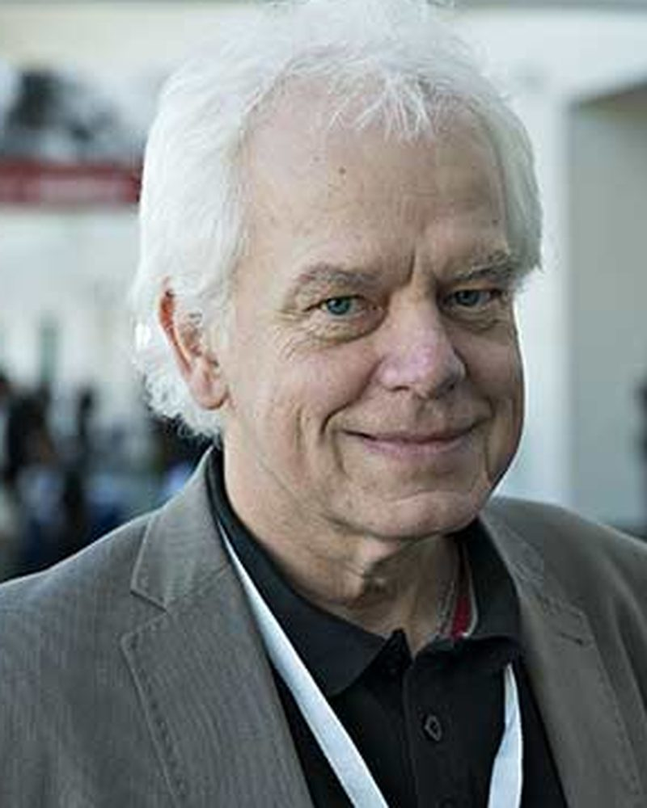
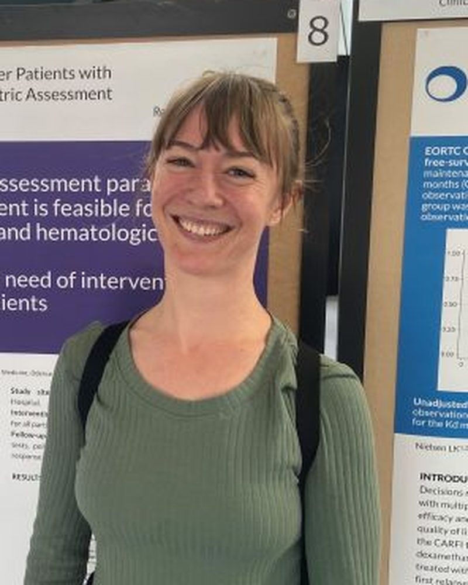
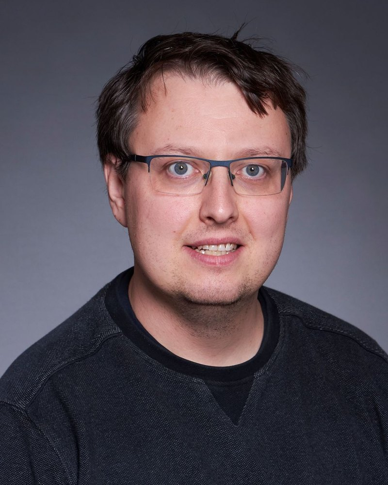

Vores team
Menneskene bag QoLRC.
Ledelse
-

Henrik Frederiksen
Læge, ph.d., forskningsleder og professor
Overlæge og forskningsleder ved Hæmatologisk Afdeling og Forskningsenhed, Odense Universitetshospital og Syddansk Universitet. Hans forskning fokuserer på skrøbelighed og understøttende behandling ved hæmatologisk kræft, herunder hvordan vurdering af skrøbelighed kan bruges i den daglige klinik til at tilpasse behandlingen, samt godartede hæmatologiske sygdomme. Tidligere formand for Dansk Hæmatologisk Selskab.
-

Lene Kongsgaard Nielsen
Læge, ph.d., videnskabelig leder og lektor
Overlæge i hæmatologi, lektor ved Syddansk Universitet og videnskabelig leder af Quality of Life Research Center. Hun leder centrets forskning i livskvalitet ved myelomatose, herunder planlægning, indsamling og analyse af livskvalitetsdata i studier fra Nordic Myeloma Study Group og i danske kohorter uden for kliniske forsøg.
-

Pia K. Pedersen
Daglig leder og oversygeplejerske
Daglig leder af Hæmatologisk Forskningsenhed på Odense Universitetshospital og Syddansk Universitet. Hun har ansvaret for enhedens daglige drift og administration og understøtter forskere og forskningsprojekter på tværs af enheden, herunder QoLRC.
Forskere
-

Niels Abildgaard
Seniorprofessor
Seniorprofessor på Hæmatologisk Afdeling, Odense Universitetshospital, og Syddansk Universitet samt leder af Odense Amyloidosis Centre (AmyC OUH), et Center for Klinisk Excellence. Hans forskning dækker myelomatose fra sygdomsbiologi til behandling med særligt fokus på knoglesygdom ved myelomatose.
-

Helena Møgelbjerg Ditzel
Læge, ph.d., postdoc
Klinisk forsker, der arbejder med helbredsrelateret livskvalitet, patientrapporterede oplysninger og psykometrisk validering inden for hæmatologi og onkologi med fokus på myelomatose, autoimmune cytopenier og skrøbelighed hos ældre. Projektleder for REMNANT-PRO-studiet og forsøgsansvarlig for kohortestudiet PROGNOSIS-G8. Ph.d. i geriatrisk onkologi fra Syddansk Universitet (2025) og bestyrelsesmedlem i Dansk Selskab for Geriatrisk Onkologi.
-

Tine Rosenberg
Projektkoordinator
Forskningskoordinator og projektleder (cand.scient.san.) ved Hæmatologisk Forskningsenhed og QoLRC, Odense Universitetshospital. Hendes forskning fokuserer på hjemmebehandling og digitale patientrapporterede oplysninger ved myelomatose, herunder daratumumab givet i eget hjem og digital symptomrapportering før behandling, og hun har bidraget til dansk oversættelse og validering af flere spørgeskemaer, herunder SSQ-MM. Fra 2026 er hun ph.d.-studerende i det nationale Treat@Home-program, hvor hun undersøger hjemmebehandling med daratumumab på tværs af danske hæmatologiske afdelinger.
Ph.d.-studerende
-
 Foto følger
Foto følgerAnne Møller Clausen
Sygeplejerske, cand.cur., ph.d.-studerende
Sygeplejerske, cand.cur. og ph.d.-studerende på Hæmatologisk Afdeling, Odense Universitetshospital. Hendes ph.d.-projekt, AmyCare, handler om understøttende behandling til patienter med AL-amyloidose.
-

Nina Andersen
Læge, ph.d.-studerende
Læge og ph.d.-studerende ved Hæmatologisk Forskningsenhed. Hendes forskning undersøger, om en geriatrisk helbredsvurdering som supplement til standardbehandling gavner ældre, skrøbelige patienter med hæmatologisk kræft.
-
Foto følger
Klara Rydahl
Læge, ph.d.-studerende
Læge og ph.d.-studerende ved Hæmatologisk Forskningsenhed. To do: Tilføj Klaras ph.d.-projekt i én sætning.
Tilknyttede forskere
-
Foto følger
Madeleine King
Ph.d., adjungeret professor
Professor ved University of Sydney og adjungeret professor ved Syddansk Universitet og Hæmatologisk Forskningsenhed. Hun er en internationalt førende forsker i helbredsrelateret livskvalitet og patientrapporterede måleinstrumenter, har bidraget til standarder for brug af PRO i kliniske forsøg og modtog ISOQOL's President's Award i 2022.
-

Sören Möller
Ph.d., professor i translationel biostatistik
Professor i translationel biostatistik ved Epidemiologi, Biostatistik og Biodemografi, Institut for Sundhedstjenesteforskning, Syddansk Universitet, og tidligere biostatistiker ved OPEN, Odense Universitetshospital. Hans arbejde handler om at anvende og udvikle avancerede statistiske metoder i sundhedsforskning og klinisk epidemiologi, og han samarbejder med QoLRC om statistisk analyse af livskvalitetsdata.
Administration
-
Foto følger
Tina Käehne
Økonomi
Ansvarlig for økonomi i QoLRC og Hæmatologisk Forskningsenhed. To do: Tina tjekker og tilføjer en sætning.